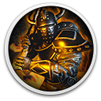

 Sir Whoopass: Immortal Death
Details
 |
|
| Playtime | Not Played |
| Last Activity | Never |
| Added | 20/12/2024 16:41:22 |
| Modified | 18/05/2025 0:14:16 |
| Completion Status | Not Played |
| Library | Gog |
| Source | GOG |
| Platform | PC (Windows) |
| Release Date | 19/08/2022 |
| Community Score | 80 |
| Critic Score | |
| User Score | |
| Genre | Adventure Fighting Hack and slash/Beat 'em up Indie Role-playing (RPG) |
| Developer | AtomicElbow AB |
| Publisher | AtomicElbow AB |
| Feature | Single Player |
| Links | Steam Official YouTube Twitch GOG Epic Discord |
| Tag | Action Adventure Exploration Fantasy Fighting Funny Hack and Slash Indie Story Rich Third Person Werewolves |
Description
WARNING: This game contains puns, dad jokes, flappy-bird-like-arcade-minigames, breaking of the 4th wall and jabs directed at tryhard-overly-serious-RPGS. Do not play if you hate FUN or would not like to strap in for a Hilarious quest for The Legendary Villain-Beating Artifact™.
Many are the tales of heroism and grandeur, of saving the princess and being rewarded her hand and half the kingdom in marriage.
This is not one of them.
You are Sir Whoopass, a valiant knight with a heart of gold!
…and also the accidental architect of absolute anarchy and chaos in a once-perfect world.
Through a series of poor life choices you managed to set loose disarray on the world… and now it’s up to you to fix it by knocking your arch-nemesis ‘The Immortal’ into the middle of next week!
We’ve got you covered! Crack open a cold Can of Whoopass on the countless Orcs, Skeletons, Trolls and other nose-picking beasts standing in your way of redemption.
Along your way you'll stumble upon hidden (and not-so-hidden, some might even say conveniently placed) puzzles, treasures, and artsy artifacts scattered throughout the world.
(At this point we probably should tell you about the purchasable weapons at The Blackschmidt, freshly brewed Cattucino, secret Wheels of Cheese, relentless IRS agents and all the side quests. But this ‘sales pitch’ is already too long)
Many are the tales of heroism and grandeur, of saving the princess and being rewarded her hand and half the kingdom in marriage.
This is not one of them.
You are Sir Whoopass, a valiant knight with a heart of gold!
…and also the accidental architect of absolute anarchy and chaos in a once-perfect world.
Through a series of poor life choices you managed to set loose disarray on the world… and now it’s up to you to fix it by knocking your arch-nemesis ‘The Immortal’ into the middle of next week!
HILARIOUS HACK 'N SLASH
Do you like ragdoll effects? What about Swords? Maces? Magical Wands imbued with the power of a slight pandemic cough?We’ve got you covered! Crack open a cold Can of Whoopass on the countless Orcs, Skeletons, Trolls and other nose-picking beasts standing in your way of redemption.
TRAVERSE THE OPEN WORLD
The quest for The Legendary Villain-Beating Artifact™ will take you across the world of Weirdwood, searching high and low. Wander through the forests, delve into the dank caves and scour the heavens on your grand endeavor.Along your way you'll stumble upon hidden (and not-so-hidden, some might even say conveniently placed) puzzles, treasures, and artsy artifacts scattered throughout the world.
(At this point we probably should tell you about the purchasable weapons at The Blackschmidt, freshly brewed Cattucino, secret Wheels of Cheese, relentless IRS agents and all the side quests. But this ‘sales pitch’ is already too long)